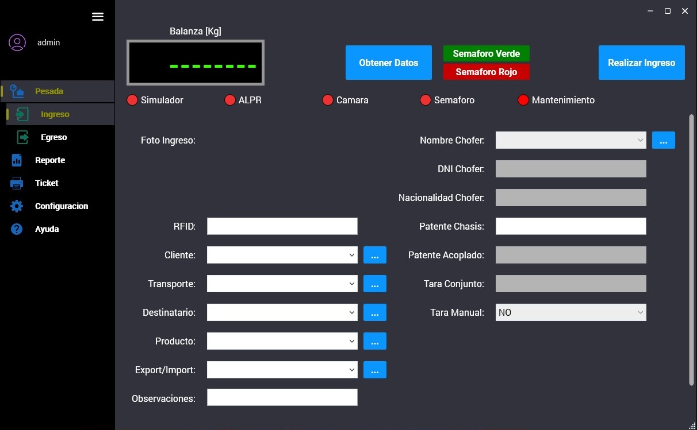

<!-- box icons-->
<script src="https://unpkg.com/boxicons@2.1.4/dist/boxicons.js"></script>

<!-- custom css-->
<link href='https://unpkg.com/boxicons@2.1.4/css/boxicons.min.css' rel='stylesheet'>

<section class="about" id="automatismo">
  <div class="img" data-aos="fade-right" data-aos-duration="2000">
     
     
     
    >
</div>
<div class="about-content" data-aos="fade-left" data-aos-duration="2000">
    <h2 class="heading" data-aos="fade-down" data-aos-duration="2000">Automatismo industrial <span> y Motion control</span></h2>

    <p style="font-size: 20px;">Soluciones integrales de automatización industrial y control avanzado, centradas en la programación, 
      configuración y optimización de sistemas compuestos por PLC / HMI / Variable-Frequency Drives / Computer Vision.
    </p>        
    <h2 id="asesoria">Respecto al control industrial, nos enfocamos en lo siguiente:</h2> 
    <br>
    <h3>	<span>Asesoramiento en la ingeniería de los procesos a controlar</span></h3>
    <p>En caso de requerirlo, con el fin de encontrar la mejor solución a la problemática propuesta por nuestros clientes, nos involucramos en la planificación y el desarrollo de la ingeniería del proyecto.
      Contamos con experiencia en el dimensionamiento de motores eléctricos, cajas reductoras y variadores de frecuencia, según el trabajo mecánico que deben realizar y el sistema físico en que se encuentran.
      Y como la cuestión eléctrica no es ajena, asesoramos en lo relacionado al diseño y conexionado de los tableros eléctricos del proyecto.
    </p>
    <br>
    <h3><span>Programación de PLC y HMI</span></h3>
    <p>Controlamos máquinas/procesos mediante la programación de controladores lógicos (PLC) y diseño de interfaces de usuario (HMI). Interacción con entradas/salidas digitales y analógicas y comunicación por bus de campo con los distintos periféricos distribuidos en la red.
      Programamos las líneas de PLC y HMI de las siguientes marcas: SIEMENS, Schneider, SEW-Eurodrive, Weintek y Delta.      
    </p>
    <br>
    <h3><span>Motion control & Kinematics</span></h3>
    <p>Mediante la parametrización y programación de variadores de frecuencia (variable-frequency drives) realizamos el control de movimiento de motores de alterna (accionamientos trifásicos asincrónicos).
      Y con servotecnología, también controlamos procesos altamente dinámicos mediante servos de alterna (accionamientos trifásicos sincrónicos).
      Desde la simpleza del movimiento de un transporte a rodillos hasta una leva electrónica, control de torque o un sincronismo de 2 o más ejes, todo es posible de mover según lo requerido por la mecánica de la aplicación. 
      Con la ayuda de la kinemática, resolvemos el movimiento complejo de la herramienta móvil (en el plano 2D o el espacio 3D) de un robot mecánico (gantry robots, roller gantries, scara robots, etc.). 
      ¡Muéstrenos el mecanismo y nosotros le daremos vida!      
    </p>
    <br>
    <h3><span>Computer Vision - Visión Artificial</span></h3>
    <p>En la industria, es cada vez más común el uso de visión artificial para inferir comportamiento sobre el control de la máquina/proceso y/o para realizar un control de calidad sobre los productos obtenidos.
      Proveemos el equipamiento y la lógica necesaria para poder detectar objetos y enviar los datos para ser analizados por el controlador lógico o el sistema de gestión de su empresa.
      Desde las dimensiones incorrectas de una plancha de cartón mal cortada hasta la detección de una persona en un área restringida, es factible de detectar, tanto para tomar decisiones dentro de una lógica como para reportar incidencias.       
    </p>
    
</div>
</section>

<section class="scada" id="scada">
  <div class="scada-content" data-aos="fade-left" data-aos-duration="2000">
    <h2 class="heading" data-aos="fade-down" data-aos-duration="2000">Sistemas<span> Scada</span></h2>
    <div class="img" data-aos="fade-right" data-aos-duration="2000">
       
       
      
    </div>
    <div class="scada-content">
    <p style="font-size: 20px;">Soluciones industriales
      Desarrollo y puesta en marcha de sistemas SCADA. ¡Lleve su control de procesos industriales al siguiente nivel de la Industria 4.0!
      <br>
      <br>
      Si bien los sistemas SCADA llevan más de dos décadas implementándose, con el auge de la Industria 4.0, se hace cada vez más importante contar con este tipo de sistemas centralizados, que permiten ver en tiempo real cada etapa del proceso productivo de la planta. <br> <br>
      Uno de los pilares de la Industria 4.0 son los datos. Con un SCADA implementado, es posible acceder en tiempo real a los datos de toda la planta, desde cada proceso productivo que la compone (cantidad de producto por minuto, por ejemplo), cada máquina/automatismo que trabaja (horas de producción, por ejemplo), hasta la mínima unidad de un dispositivo de campo (un sensor inductivo, por ejemplo). <br><br>
      Con estos datos, no sólo se puede acceder a la visualización total de los procesos, sino que se pueden usar para realizar mantenimiento predictivo de los equipos, mejorar tiempos de producción, ver tiempos de parada, promediar la cadencia de las máquinas por jornada, etc. <br> <br>
      El desarrollo se lleva a cabo en la plataforma Ignition®, de Inductive Automation. Es un potente SCADA que puede correr tanto en sistemas operativos Windows® como Linux. <br> <br>
      No solamente desarrollamos en la plataforma, sino que además asesoramos en el hardware necesario (servidores, redes), y dejamos listo y configurado el servidor en caso de requerirlo (llave en mano). <br> <br>
      La configuración del servidor consta de la instalación del sistema operativo, instalación de la base de datos, configuración de RAID de discos, configuración de backups periódicos en NAS y replicación de la base de datos, etc. De esa manera, se minimiza la pérdida de datos ante un evento fortuito, protegiendo la información del sistema.      
    </p>                      
    <h2><span>Con un sistema SCADA en producción se puede lograr:</span></h2>    
    <p> <i class='bx bxs-check-circle'></i> Visualización y control de todo el proceso productivo para los operadores y supervisión para los mandos superiores</p>
    <p> <i class='bx bxs-check-circle'></i> Acceso a cada dato del proceso en tiempo real</p>
    <p> <i class='bx bxs-check-circle'></i> Comunicación con cada PLC de la planta, ya que trabaja con los estándares de buses de campo de la industria (PROFINET, Profibus DP, Ethernet/IP, Modbus TCP, MQTT, etc.)</p>
    <p> <i class='bx bxs-check-circle'></i> Historizar datos y mostrar las curvas y gráficas correspondientes</p>
    <p> <i class='bx bxs-check-circle'></i> Realizar cómputos (mediante las fórmulas del proceso) y mostrarlos/graficarlos</p>
    <p> <i class='bx bxs-check-circle'></i> Compartir los datos y realizar consultas a la base de datos desde el Sistema de Gestión/ERP de la empresa</p>
    <p> <i class='bx bxs-check-circle'></i> Crear alarmas de advertencia/falla y enviarlas por correo electrónico/SMS/Telegram®</p>
    <p> <i class='bx bxs-check-circle'></i> Realizar reportes, con la posibilidad de programar el envío por correo electrónico (diario, anual, mensual, por ejemplo)</p>
    <p> <i class='bx bxs-check-circle'></i> Dado que es un sistema web, se puede controlar desde cualquier PC/Tablet dentro de la red empresarial, sin necesidad de instalar software extra</p>
    <p> <i class='bx bxs-check-circle'></i> Posibilidad de acceso remoto, mediante una VPN empresarial (¡incluso se puede adaptar el SCADA para verlo desde un teléfono celular!)</p>
  </div>
</div>
</section>

<section class="redes" id="redes">
  <div class="redes-content" data-aos="fade-left" data-aos-duration="2000">
    <h2 class="heading" data-aos="fade-down" data-aos-duration="2000"> Redes de datos y <span> virtualización de servidores </span></h2>

    <p>Redes de datos y configuración e implementación de firewalls. Virtualización de servidores.
      Redes de datos y configuración e implementación de firewalls.
      ¿Quiere organizar la red IP de su empresa? ¿La dirección IP de un PLC de planta está en la misma red que la dirección IP 
      de una PC de Administración? ¿Desea comunicarse con su empresa remotamente de forma segura? 
      ¿Necesita controlar el tráfico de los colaboradores que utilizan el Wifi? ¿Quiere aumentar la seguridad de la intranet de su empresa?</p>    
    <div style="text-align: left;">
      <h3> <span>Para ello, y para atender otras problemáticas, ofrecemos los siguientes servicios:</span></h3>      
      <div>
      <p> <i class='bx bxs-check-circle'></i> Planificación e ingeniería de infraestructuras de redes de datos intranet, del tipo “small business”</p>
      <p> <i class='bx bxs-check-circle'></i> Configuración de switchs administrables y routers (access lists, filtrado MAC, static / dynamic routing, VLAN, trunking, DHCP, NAT y VPN)</p>
      <p> <i class='bx bxs-check-circle'></i> Puesta en marcha de WLAN</p>
      <p> <i class='bx bxs-check-circle'></i> Experiencia en equipamiento Cisco, Linksys, Ubiquiti y Mikrotik</p>
      <p> <i class='bx bxs-check-circle'></i> Puesta en marcha y administración de firewalls pfSense y OPNsense</p>
    </div>
    </div>
    <h3><span>Virtualización</span></h3>
    <p>Con la virtualización se logran optimizar los recursos de hardware de un servidor. En lugar de tener varios servidores físicos realizando tareas puntuales (muchas veces desperdiciando los recursos de hardware de cada uno de ellos), se pueden tener los mismos virtualizados en uno solo físico. <br> <br>
      Por ejemplo, se pueden colocar un servidor de correos, un servidor web, un servidor de base de datos, un sistema ERP y un sistema SCADA, todos virtualizados en el mismo servidor físico, conservando su independencia. <br> <br>
      Esto ahorra costes importantes de inversión inicial de hardware, mantenimiento y consumo eléctrico. Además, optimiza los recursos de hardware, pues se pueden administrar los recursos de cada servidor virtual de modo de asignarle a cada uno lo que necesita para su correcto desempeño. <br> <br>
      Para virtualizar, contamos con las herramientas VMware®, Citrix® y Proxmox®. <br> <br>
      Creamos, configuramos y administramos las máquinas virtuales que su empresa necesita. ¿Le queda alguna duda? ¡Consúltenos!
      </p>
    <div>
      <img src="" alt="" data-aos="fade-right" data-aos-duration="2000">
      
      
  </div>
  </div>
</section>

<section class="desarrollo" id="desarrollo">
  <div class="desarrollo-content" data-aos="fade-left" data-aos-duration="2000">
  <h3 data-aos="fade-right" data-aos-duration="2000" style="text-align: center;">Software a <span>medida</span></h3>
  <p>Programación de software a medida (de escritorio, web y apps mobile), diseñado específicamente para satisfacer las necesidades de cada cliente. Desde sistemas básicos a estructuras complejas.
    Nos encargamos del diseño y la programación de aplicaciones del tipo:</p>

    <li><span>Escritorio (Desktop). Son las que se instalan y ejecutan en cada PC de usuario</span></li>
    <li><span>Web. Se crea la aplicación en una PC servidor (en la red local o en la nube) y cada cliente la ejecuta desde el navegador (browser) de su PC, sin necesidad de instalarla.</span></li>
    <li><span>Mobile. Aplicaciones para teléfonos celulares/tablets.</span></li>
    
    <p data-aos="fade-down" data-aos-duration="2000">Realizamos la codificación completa del proyecto, tanto del backend como del frontend, utilizando los frameworks de desarrollo actualmente vigentes del mercado.
    Desde proyectos relacionados a la gestión administrativa de una empresa hasta los relacionados con electrónica de control, si tiene una idea acérquela… ¡y la materializamos en la memoria RAM! 
    </p>
  </div>
  <div>
    <img src="" alt="" data-aos="fade-right" data-aos-duration="1500">
    
  </div>

</section>